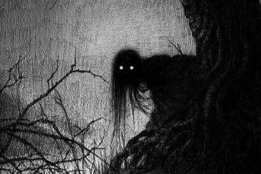

الجب في الطريق

تقرب الساعة إلى العاشرة ليلا... بدأت العديد من المحلات التجارية عند التقاطع في الإغلاق. كانت خدمة الحافلات تنتهي في الساعة تاسع و نصف مساءا.
فتاة وحدها في محطة حافلة منهارة، في يدها حقيبة. من الواضح أنها تنتظر شخصا من لغة جسدها.
نظرت إلى الأعلى عندما رأت رجلا في منتصف العمر يمشي نحوها.
أصبح وجهه واضحا وحاولت أن تبتسم. لم يكن وجهها واضحا لأن خصلات الشعر سقطت على وجهها.
لكنه تعرف عليها
"ماذا أصابك يا عزيزتي؟ ألم تأت والدتك لاصطحابك؟" وهو سأل.
"لا ، أخي... أنا في انتظار والدتي. أحضرنا صديق من المحطة إلى هنا. قلت لأمي إنني سأكون في آخر حافلة. لا امكنني تلقي مكالمة على الهاتف".
كانت ترتدي الجينز وقميص. في يدها حقيبة كبيرة. تدرس التمريض في بنغالور وتعود إلى المنزل مرة في كل ثلاثة او أربعة أشهر.
المسافة قصيرة من منزله إلى منزلها. تجد مكان المزرعة بينهما. كان هو ووالدتها عاملين في الحوزة. عليها المشي قليلا من محطة الحافلة للوصول إلى منزلهم.
في الليل ، هناك حركة المرور قليل في هذا الطريق. الحقيقة هي الكثير من الناس كانوا يخشون السير في هذا الطريق ليلا. هناك بئر مجوف على جانب الطريق مليء بالحجارة والطين. اعتقد الناس هناك أن شخصا قد خنق امرأة حتى الموت منذ فترة طويلة وألقى في تلك البئر المجوفة ، وأن روح المرأة كانت في البئر نفسها. بعض من الناس يخشون خشيا برؤية صورة امرأة هناك في الليل!.
كانت هي خائفة من السير في هذا الطريق حتى خلال النهار بعد سماع القصص التي أخبرتها والدتها. يقوم البئر في طريق من منزله إلى منزلهم.
"ماذا نفعل الآن؟ الساعة تضيق ولم يعد من الصواب الجلوس هنا. تعال معي... سآخذك إلى منزلك".
كانت سعيدة عندما سمعت ذلك.
"حسنا يا أخي... يفوت الأوان اذا أنتظر والدتي..."
"لا تخافوا ... أنا لست هناك ، عزيزي ... هيا..."
أعطاها الشجاعة...
بدأوا المشي على جانب واحد من الطريق. بعد أن ذهبوا أبعد قليلا ، وصلوا إلى الزقاق المغطى بالطين. بدأ الظلام يزداد سمكا بمجرد انتهاء آخر ضوء شارع على الطريق
أشعل الشعلة في يده.
"الشعلة ضوئها أقل. لكن دعونا نرى الطريق. امشي ورائي. سيكون هناك بعض الحيوانات الزاحفة.
أطاعت كما قال. كان صوت النقيق عاليا في كل مكان. يمكنك سماع عواء الثعالب في مكان من بعيد. كان هناك قليل من ضوء القمر. نمكن رؤية الغيوم الداكنة في السماء.
كان صوت أحذيتهم الخطوط على الأوراق واضحا.
"اسمعي... تريد أنسي الانضمام ممرضة مثلك. أليست عمتها روزالي في لندن؟. تقول لها عن الممرضة. لهذا السبب ترعب فيها. لكن لا تمكنني الحياة إلا هي". قال حازنا.
"أليس هذا جيدا يا أخي؟" سألت.
لطالما أحبت حديثه البريء. كانت عارفة أن أنسي الحياة له.
كانت هناك مضات من البرق في السماء.
"أسرع. أعتقد هناك دعوة لهطول مطر."
لا يوجد سوى الأشجار من حولهم. كان هناك صمت يخيف أي شخص.الطريق كان مرئيا في ضوء الشعلة واضحا.
حينئذ، كانوا يقتربون البئر. كان البئر مرئيا بوضوح في وميض البرق مرة أخرى.
وقف لحظة عندما لم يستطع سماع حركتها.
"ماذا تفعل ... استمر... أنا دائما خائفا عندما أصل إلى هذا المكان. أسمع بعض شيء منذ صغيرا عن هذا البئر. فجأة غرق قلبي ولهذا سبب وقوفي... "
التفت إليها. كان وجهها هادئا. لن يخاف أحد إذا رأوا شعرهم يتساقط على وجوههم في مهب الريح.
"امشي أمامي. سأتبعك. يمكنك المشي دون خوف".
سارت بسرعة إلى الأمام عندما سمعت هذا. فجأة، طار الخفاش بينهما من مكان ما. اخاف صوت وميض أجنحتها. كانت الرياح تزداد قوة. الظلام الذي يخيف أي شخص حوله.
مشيت إلى الأمام. العزاء الوحيد كان ضوء الشعلة.
وقفت عندما سمعت صوتا من خلفها مثل حجر يسقط في البئر. كان هناك صراخ.
فجأة ونظرت إلى الوراء، شعرت بالذهول. عندما ذهب ضوء الشعلة، واشتد الظلام.
نادته عندما لم تستطع سماع صوته. كان صوتها أجش.
لا يمكن رؤية البئر بدون ضوء لكي بئر دون حجاب.
صرخت بصوت عال خوفا لأن يكون ساقطا في البئر.
كانت خائفة حقا لاشتداد البرق مع الريح.
كانت صراخا عاليا تسمع من البئر ، وعرفت أن صوته. ارتعش حلقها. لم تستطع التحدث بصوت عال.
مشت ببطء إلى جانب البئر.
انتشر صوت نباح الكلاب في الهواء.
كانت ترتجف من الخوف.
عندما كانت تحاول النظر إلى البئر، جاءت يد من خلف ظهرها لتلمسها.
أمسكتها اليد بإحكام وسحبتها إلى الخلف.
نظرت إلى الوراء مذهولة.
"يا صبية... لماذا أتيت إلى ضفة البئر وماذا حدث لهاتفك؟ كيف أتصل بك؟" كانت والدتها.
شعرت بالارتياح قليلا عندما رأت والدتها ، لكن الحادث الذي حدث في وقت سابق كان هذا خوف.
"أمي... اخونا فرغيس" قالت بصوت مرتجف مشيرة إلى حافة البئر.
نظروا هناك مع صدمة.
"ماذا أصابك يا صبية؟ لا يوجد أحد هناك. هيا... دعنا نذهب إلى المنزل"قالت أمها.
"لا... يا أمي... كان اخ فارغيس هو الذي أحضرني إلى هنا كنت وحيدة منك. لكن أخي فقد قدمه وسقط في البئر. اتصل اي شخص.ظو أمي، علينا أن نسلم أخينا؟ قالت بخوف.
عندما سمعت هذا، أمسكتها من ذراعها وسحبتها إلى المنزل.
كانت وجوههم تتعرق.
"أمي ... استسلم... "
لكنها تمسكت بإحكام.
ركضت معها إلى المنزل. أغلق الباب فورا...
شربت نصف الماء في الإبريق على الطاولة في جرعة واحدة.
كانت تلهث أيضا. نظرت إلى وجه أمها وهي تشرب الماء.
كانت الحيرة على وجهها واضحة.
"أمي... ما هذا...؟ دعونا نتصل الشرطة". أخذت الهاتف وكانت على وشك الاتصال. لكن أمسكت أمها بهاتفها وأخذوها.
"لا صبية... لا داعي..."
ونظرت إليهم باهتمام.
" أيجب أخ فارعيس أن يموت هناك؟" سألت داهشة.
"لا يا صبية.... أقول..."
"ثم كيف يا أمي... أثبت ذلك يا أمي ". كانت متوترة.
لم تمكن سوى إخبارها.
"انتحر اخ فارغيسن قبل يومين بقفز إلى البئر".
عندما سمعت هذا، انحنت على الحائط في حالة صدمة. لم تستطع تصديق ذلك.
"أمي ، ما الذي تتحدث؟ ثم أنا ... ما رأيت...؟" تأخر صوتها.
"اني اقول بالحقيقة. وكان بنته أنسي قد هرب مع قائد الحافلة قبل أسبوعين. لم يستطع ان يحمل الألم. لقد أخفيت عن أخبرك لتقريب امتحانك. اعتقدت أنني أخبرك بعد إعادة إلى المنزل . "
كان بإمكانها الاستماع فقط... تومض وجهه في ذهنها مرة أخرى. لم تستطع التخلص من تلك التجربة الرهيبة ...
حينئذ كانت السماء تمطر في الخارج مع عاصفة رعدية قوية